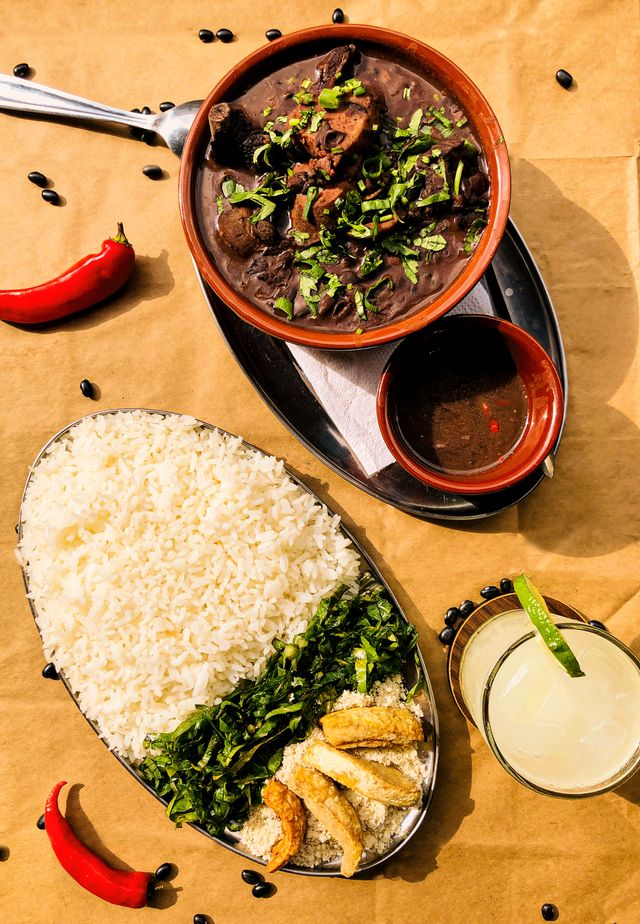

A feijoada tradicional brasileira é o prato mais emblemático do país, caracterizado pela cozedura lenta do feijão preto com uma grande variedade de carnes salgadas, defumadas e frescas.
Servida tipicamente aos fins de semana, é um ritual gastronómico acompanhado por arroz branco, farofa e vinagrete.
Dessalgar e demolhar (Véspera): Corte a carne seca e as costelinhas em pedaços e coloque-as de molho em água fria no frigorífico por 24 horas, mudando a água várias vezes; faça o mesmo com o feijão preto numa bacia à parte;
Ferventar as carnes (Dia útil): Escoe a água do dessalgue, coloque as carnes salgadas numa panela grande com água limpa e ferva-as durante 15 minutos para eliminar o excesso de gordura e sal, descartando essa água no final;
Iniciar a cozedura lenta: Deite o feijão preto no tacho principal com a água do molho e as folhas de louro, junte a carne seca e leve ao lume médio por cerca de uma hora até que comecem a amaciar;
Enriquecer com os defumados: Adicione ao tacho as costelinhas pré-cozidas, o lombo, o paio e a calabresa às rodelas, deixando tudo cozinhar em lume brando por mais uma hora, mexendo de vez em quando e acrescentando água a ferver se necessário;
Refogar e apurar o caldo: Frite o bacon com a cebola e o alho numa frigideira, esmague aí duas conchas do feijão cozido para criar uma pasta e verta tudo no tacho; junte o sumo de laranja e ferva em lume brando por 25 minutos até o caldo engrossar.